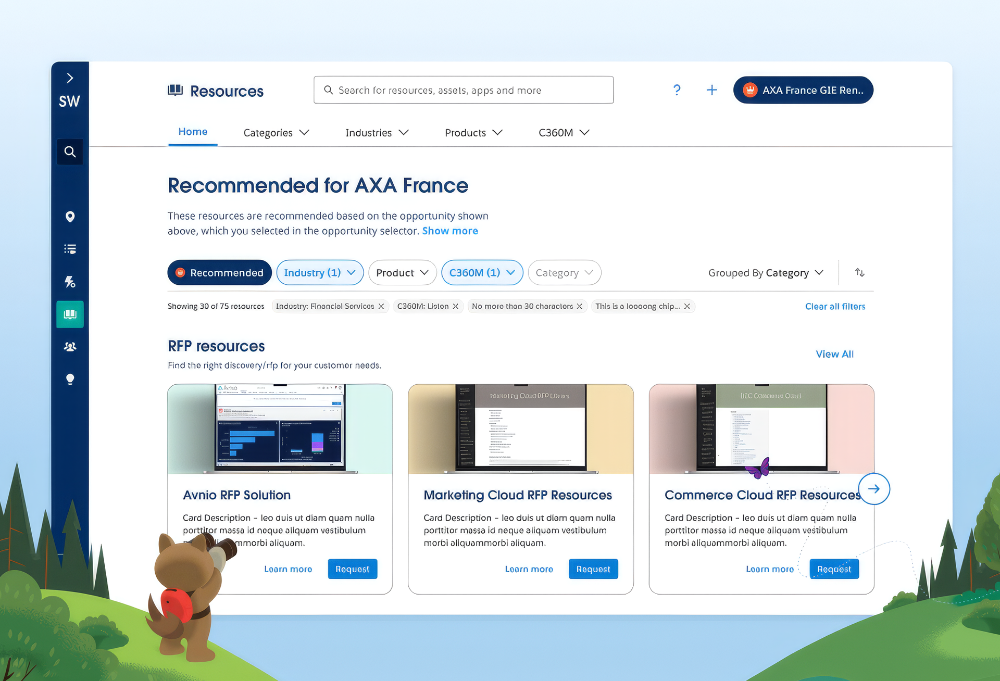
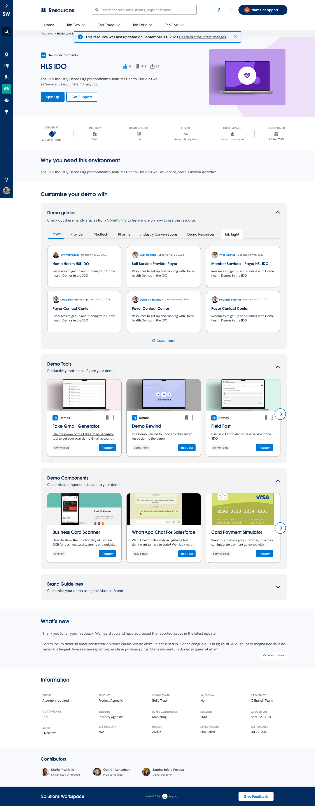
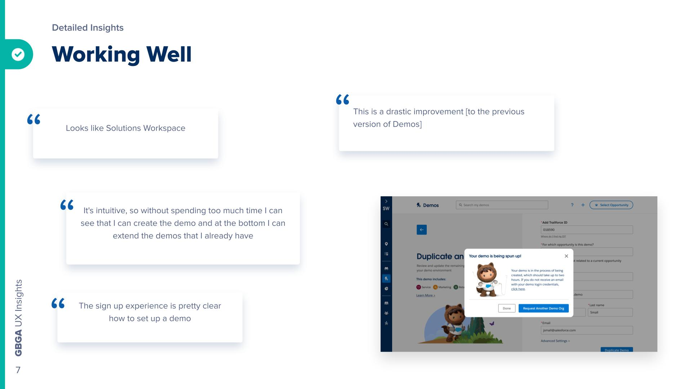
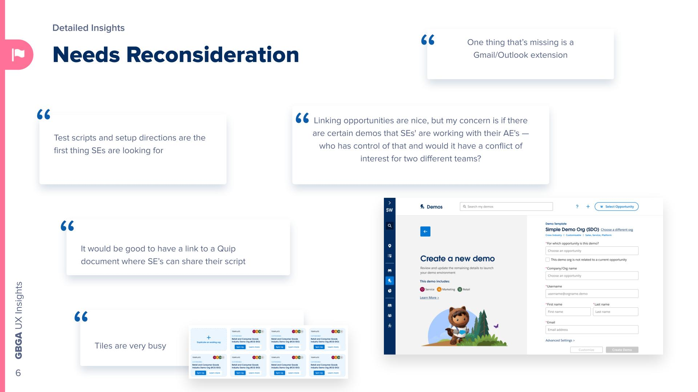

Solutions Workspace is where Salesforce sellers go every day. It's their go-to hub. I spent over two years designing for this platform, working on everything from rebuilding navigation from scratch to overhauling the demo experience to research that's informing what comes next.
The Impact
Resources Redesign: Ground-Up V2
Design Strategy, UX, ResearchThe Challenge
Resources is the second most-used section of Solutions Workspace. Sales teams use it to find materials and assets they need. But the existing experience was messy, hard to navigate, and people didn't trust it.
How I Approached It
I handled the whole design process from start to finish:
- Strategy: Built a brand-new information architecture and navigation. No existing blueprint to copy.
- Research: Talked to Sales Engineers and Account Executives to understand their actual needs
- Personas & Flows: Created detailed personas and user flows to guide my design
- Prototyping: Built wireframes and prototypes, then tested and iterated
- Dev Partnership: Worked closely with the dev team during implementation
- Testing & Launch: Ran usability tests and quality checks before launch
What Happened
Resources became the second most-clicked section in Solutions Workspace. People loved the better search, filtering, and overall clarity. The whole redesign showed that taking time to research and plan actually works.

Redesigned Resources interface with improved navigation and content organization
What I Learned
Strategy and design need to be in the room from the beginning. You have to be willing to push back on the vision but also flexible when things change. That balance takes practice.
Demo Signups: Unified Demo Management
UI Design, Usability Testing, Dev PartnershipThe Problem
Sales Engineers had to jump around between different demo tools. They couldn't easily find demos, reuse them, or manage them. People were frustrated and wasting time.
What I Did
I joined early and designed the UI. I tested it with Sales Engineers and Account Executives using unmoderated testing. This let me validate the design before we even shipped it.
What People Thought
- Big improvement: Testers said it was way better than what we had before
- Easy to use: People found the new demo creation flow intuitive. They liked having everything in one place
- Fits the product: Users said it looked and felt like the rest of Solutions Workspace

Demo Signups interface with unified demo management and creation flow
Solutions Workspace Reimagined: Research Leadership
Research Strategy, User Insights, Cross-functional SynthesisWhy We Did This
Leadership wanted to know how well Solutions Workspace was actually working and whether the team was ready for AI features. The insights would shape where we went next.
The Research
I helped lead a big research study with the design team. We looked at it from multiple angles:
179 Account Executives surveyed on usage patterns and tool preferences
9 strategic stakeholder interviews with leaders to align on vision and direction
Key Findings That Shaped the Roadmap
- Usage Concentration: AEs primarily concentrate in Value and Demos spaces—a clear signal for where to invest next
- Discoverability Gap: The top AE challenge wasn't content—it was "I don't know where to start or what's available"
- AI Readiness: AEs are ready for AI-driven automation to cut manual effort and reduce cognitive load
- Enablement Opportunity: Strong need for better onboarding and awareness to drive adoption of existing features


Detailed UX insights from 211 participants revealing what's working and what needs reconsideration
Content Display Templates: Scalable Design System
Problem Framing, UX Design, Figma SpecificationThe Problem
The Opportunity
I wanted to create custom display templates for each content type. Each template would be designed for how people actually use that kind of content. It would make the experience better and give the engineering team clear specs to work from.
How I Did It
I handled the whole process:
The Results

Content display templates showcasing tailored designs for different content types (Assets, Apps, Demo Environments, Services)
What I Learned
Handoff is a design challenge too. Passing specs to engineering isn't where design ends. That's where a new challenge begins. You need to understand how the engineering team actually works. What constraints they face. How they'll use what you've built. That knowledge changes how you write specs, document things, and structure your components.